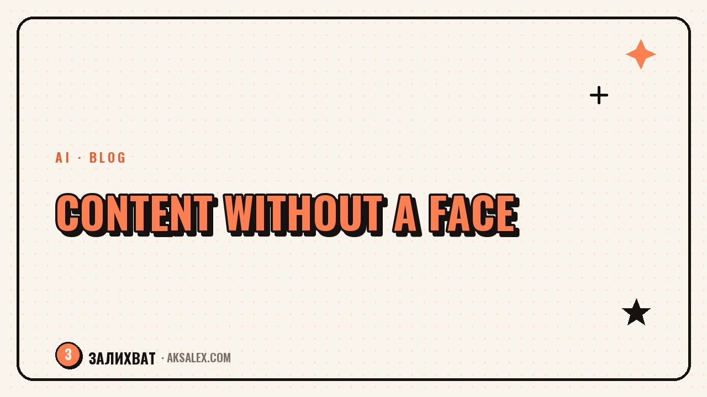

Faceless Content: Formats for the Camera-Shy

Why shyness is not a barrier
Fear of the camera is familiar to most beginners. It comes from the thought that everyone will watch and judge. In reality the audience comes for value and emotion, not for your looks, and plenty of blogs prove that you can grow just as well without showing your face.
Faceless formats remove the main barrier: no need to catch the right mood, put on makeup or fight through stiffness. You focus on the meaning. For the camera-shy, this is often the only way to start - and later, if you want, you can gradually step into the frame.
The viewer stays for the value and the delivery, not for a face. Shyness gets in the way of starting, but not in the way of a blog growing.
Formats in order of growing boldness
It helps to line the formats up on a scale: from ones where you are not present at all to ones where you appear through your voice. Start with the most comfortable and move on as your confidence grows.
Completely without you
- On-screen text set to music: thoughts and tips in large captions.
- Carousels and posts: pure text with graphics.
- Aesthetics and product shots: food, interiors, details with no person.
You are present, but not fully in frame
- Hands and process: show how you do something in close-up.
- Screencast: a screen recording with commentary - for tutorial content.
- Voiceover over b-roll: you speak but do not appear.
Which format for which kind of shyness
Shyness comes in different forms: some fear how they look, some fear their voice. Match the format to what makes you uncomfortable specifically.
| What makes you uncomfortable | Suitable format | What you show |
|---|---|---|
| Your looks and your voice | On-screen text, carousels | Only text and graphics |
| Only your looks | Voiceover, b-roll | Process, hands, screen |
| Only your voice | On-screen text, subtitles | Video without narration |
| Speaking live to camera | Screencast, product shots | The screen or objects |
You do not have to choose a format for life. Start where your anxiety is lowest, get comfortable, and then add boldness if you want. Many grow exactly this way: from text to voice, from voice to a brief appearance in frame.
How to stay alive behind the scenes
A faceless format risks feeling cold. A face creates connection, and without it you have to build that connection by other means. The main one is a personal tone: write and speak as yourself, share opinions and details that give away a living person.
- Speak in the first person: "I tried it," "it annoys me when."
- Keep a recognizable style - it works as your calling card instead of a face.
- Add personal stories and opinions, not just dry usefulness.
- Reply warmly in the comments - that is where you show up as a person.
Behind a good faceless blog you can always sense a character. It is the personal point of view that sets living content apart from a faceless feed assembled just to tick a box.
Common mistakes of camera-shy creators
The first mistake is waiting for the fear to pass and not starting. It does not pass from waiting, only from practice in a comfortable format. The second is stripping the content of all personality: someone else's voice, stock images, texts with no you in them. There is nothing to fall in love with in a blog like that.
The third mistake is treating a faceless format as second-rate and being ashamed of it. It is a full-fledged choice, not a crutch. Many deliberately stay off camera for years. Choose the format in which you feel calm creating - it is out of that calm that regularity is born, and out of regularity, growth.
Frequently Asked Questions
Can I run a blog if I am shy of the camera?
Yes. There are dozens of faceless formats: on-screen text, carousels, voiceover, hands and process, screencast. The audience comes for value and delivery, not for your looks.
Which format should the shyest person start with?
On-screen text set to music, or carousels - there you appear through neither voice nor face. Get comfortable and, if you want, add voiceover, and later an appearance in frame.
Won't a faceless blog look cold?
Only if you strip it of all personality. Tell the story as yourself, share opinions and personal stories, keep a recognizable style - and a living person will come through behind the blog.
How do I pick a format for my kind of shyness?
Look at what makes you uncomfortable. Afraid of both looks and voice - text and carousels. Only your looks - voiceover and b-roll. Only your voice - video with subtitles and no narration.
Will the fear of the camera pass over time?
It passes not from waiting but from practice in a comfortable format. Start where you feel calm, build up regularity and confidence - and if you want to step into frame, it will come easier.
Enjoyed this one? Here's what to read next. An honest look: can you really earn from a small blog, and which formats are right for it.
Read the article →not by hand